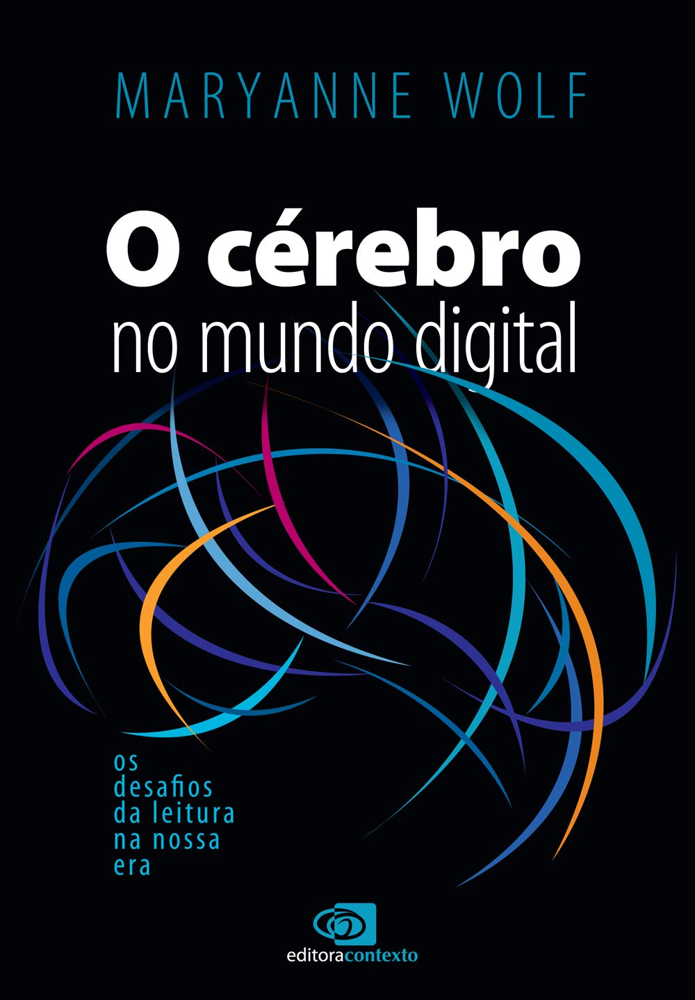

📖 O Subterfúgio
Início
Escritores
Leituras
Contos
Contato
Sobre
Dark Art
Tracks
Leituras Concluídas em 2026
Lido ✓
The Faithful Executioner
Joel F. Harrington
Lido ✓

O cérebro no mundo digital
Maryanne Wolf